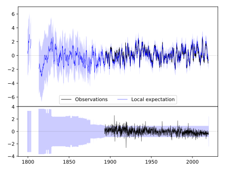
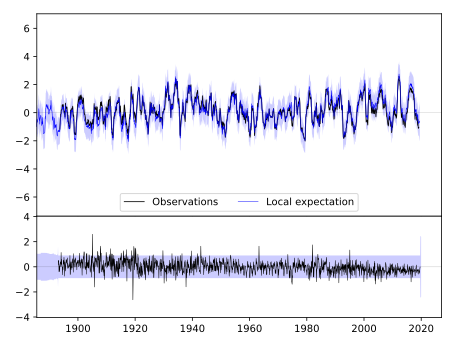
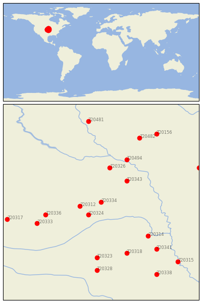

MADISON [USA]


| Neighbour | Name | Country | Distance | Lon/Lat | Years |
|---|
| 720334 | MADISON | USA | 0 | -97.5, 41.8 | 1893-2019 |
| 720324 | GENOA 2 W | USA | 41 | -97.8, 41.5 | 1875-2019 |
| 720312 | ALBION | USA | 42 | -98.0, 41.7 | 1892-2019 |
| 720343 | WAKEFIELD | USA | 74 | -96.9, 42.3 | 1893-2019 |
| 720326 | HARTINGTON | USA | 90 | -97.3, 42.6 | 1891-2019 |
| 720336 | NORTH LOUP | USA | 113 | -98.8, 41.5 | 1888-2019 |
| 720494 | VERMILLION 2 SE | USA | 121 | -96.9, 42.8 | 1884-2019 |
| 720314 | ASHLAND NO 2 | USA | 127 | -96.4, 41.0 | 1888-2019 |
| 720333 | LOUP CITY | USA | 136 | -99.0, 41.3 | 1893-2019 |
| 720318 | CRETE | USA | 142 | -96.9, 40.6 | 1882-2019 |
| 720323 | GENEVA | USA | 144 | -97.6, 40.5 | 1886-2019 |
| 720341 | SYRACUSE | USA | 163 | -96.2, 40.7 | 1871-2019 |
| 720328 | HEBRON | USA | 178 | -97.6, 40.2 | 1886-2019 |
| 720482 | CANTON | USA | 182 | -96.6, 43.3 | 1893-2019 |
| 720317 | BROKEN BOW 2 W | USA | 188 | -99.7, 41.4 | 1893-2019 |
| 720156 | ROCK RAPIDS | USA | 207 | -96.2, 43.4 | 1893-2019 |
| 720158 | STORM LAKE 2 E | USA | 209 | -95.2, 42.6 | 1889-2019 |
| 720481 | ALEXANDRIA | USA | 212 | -97.8, 43.7 | 1882-2019 |
| 720315 | AUBURN 5 ESE | USA | 216 | -95.7, 40.4 | 1893-2019 |
| 720338 | PAWNEE CITY | USA | 218 | -96.2, 40.1 | 1882-2019 |